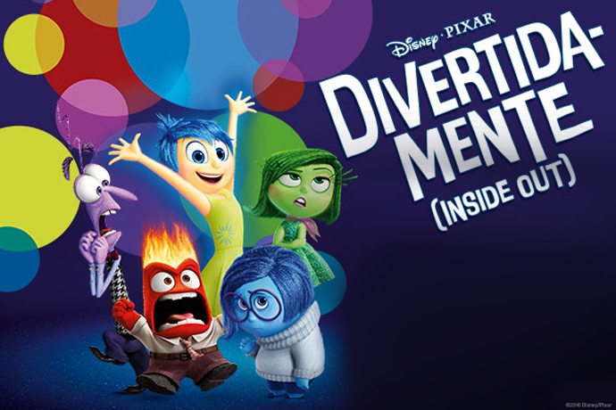
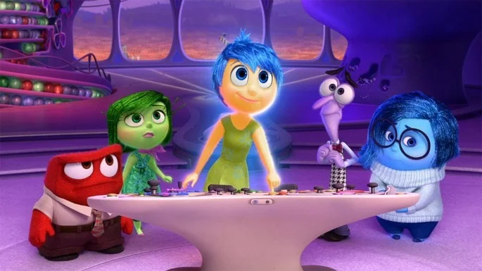
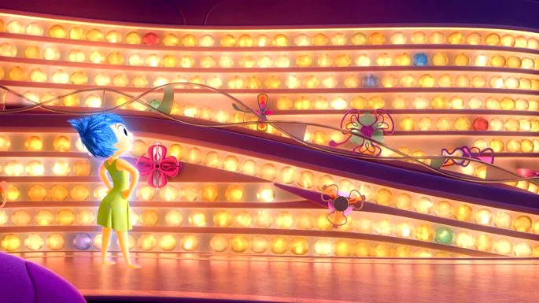

Divertida Mente trata de um tema complexo (a máquina do nosso pensamento) a partir de uma abordagem singela e didática. Não por acaso, o longa-metragem recebeu os mais importantes prêmios de melhor filme de animação.

Riley descobre que irá se mudar de Minnesota para São Francisco por causa do trabalho do pai. A menina tem 11 anos quando toma consciência de que irá passar por essa complicada transição.
Riley enfrentará portanto duas mudanças: uma externa (de cidade) e uma interna (o fim da fase infantil para a entrada na adolescência).
Ao longo do filme acompanhamos o desenvolvimento da menina desde o momento que ela sai da barriga da mãe. Assim que a pequena bebê é segurada no colo vemos nascer também seu primeiro sentimento, a Alegria.
Logo a seguir, precisamente 33 segundos depois, aparece o Medo e a Tristeza, outros sentimentos que a acompanharão durante o seu percurso. Mais tarde se juntará a Raiva e o Nojinho, outros dois afetos essenciais que disputarão o controle da sala de comando.
Assistimos não só o que se passa no dia-a-dia da garota como também de que forma esses sentimentos vão sendo processados. Riley é obrigada a deixar para trás o seu time de hockey (os Feras do Gelo), os amigos e a casa que tanto gostava. Seu dia-a-dia passa por uma mudança substancial.
E não se trata aqui de demonizar ou louvar algum sentimento específico, todos eles são importantes para a manutenção da saúde psíquica da menina. Percebemos rapidamente como o Medo, por exemplo, é essencial para garantir a segurança da criança.
Através da animação, de forma metafórica, entendemos como se dá o nosso funcionamento interno: o trem do pensamento, o depósito de memória, as emoções complementares que se revezam ao longo das várias fases da vida.

Cada emoção essencial de Divertida Mente possui um desenho específico que se relaciona diretamente com o sentimento que representa.
A Alegria, por exemplo, tem um formato corporal que nos lembra uma estrela.
O Medo, por sua vez, tem os contornos de um nervo e é roxo.
Nojinho é inteiramente verde e nos recorda um brócolis (comida que Riley não aprecia).
A Raiva é como um tijolo: retangular, vermelho e pesado. A Tristeza tem um contorno de gota, como uma lágrima, e é azul.

Após assistirmos a animação notamos como não existem sentimentos bons e ruins, todos os sentimentos são necessários para o nosso desenvolvimento psíquico.
Ao contrário do que nos faz crer a sociedade contemporânea, a tristeza é essencial para a nossa vida.
O nojo também é importante, porque de certa forma nos protege. O medo também não deve ser desprezado porque nos mantém em segurança.
O filme aborda como a mudança é um imperativo da vida: com o passar do tempo precisamos mudar e somos frequentemente colocados à prova.
Muitas vezes acomodados na nossa zona de conforto, custamos a aceitar as mudanças que a vida nos impõe, mas a verdade é que somos constantemente empurrados para novas situações com as quais não sabemos inicialmente como lidar.
Divertida mente nos ensina que se adaptar as novas realidades é preciso, ainda que seja um movimento difícil a princípio.